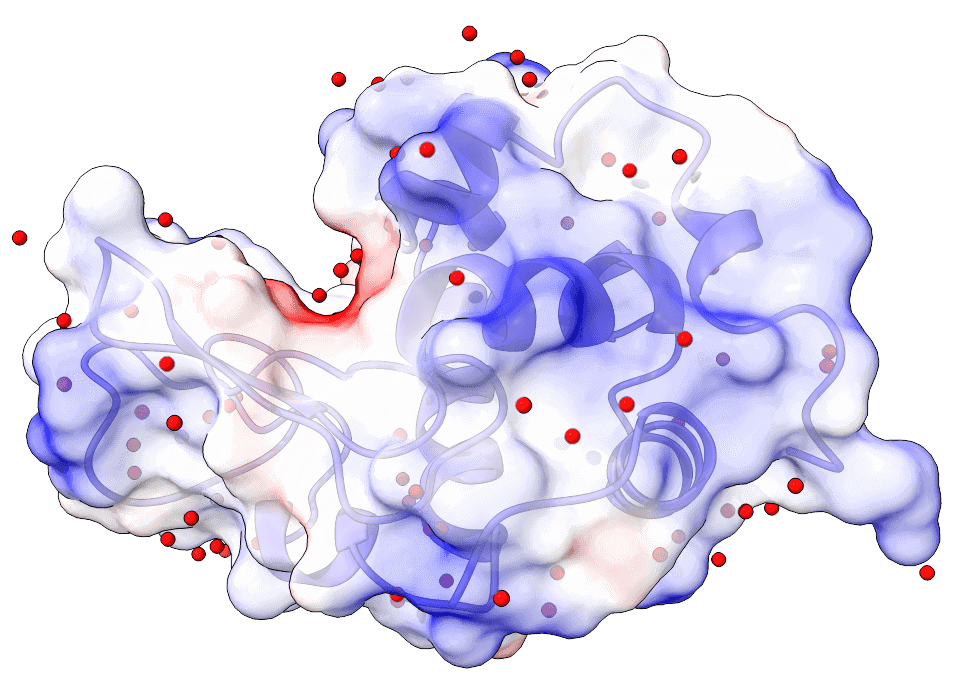
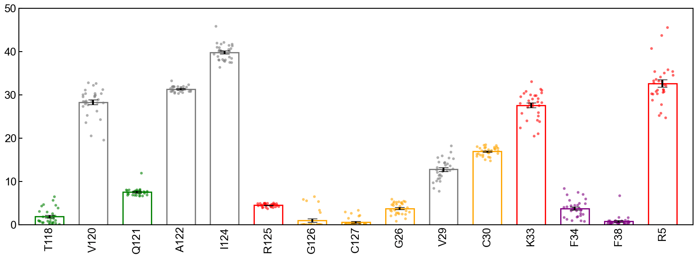
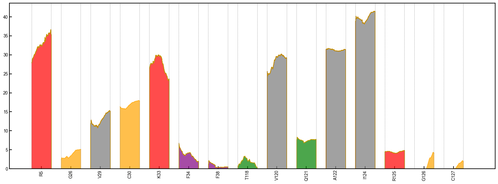

Tutorial 1: Residue Contact Analysis of Lysozyme MD Analysis
This comprehensive tutorial demonstrates residue-residue contact analysis using GMX_RRCS with lysozyme MD simulation data.GMX_RRCS is a tool designed for analyzing residue-residue contact scores (RRCS) in molecular dynamics (MD) simulations. This tutorial will guide you through the entire process, from setting up the simulation data to computing and visualizing RRCS results. By following this guide step by step, you will learn how to efficiently use GMX_RRCS to analyze protein interactions.
Table of ContentsPrerequisites
Before starting, ensure you have the following installed:
- GROMACS for molecular dynamics simulation.
- GMX_RRCS installed on your system.
- Python (3.7 or later) with necessary dependencies such as NumPy and Matplotlib.
# Install required dependencies
pip install gmx_rrcs numpy matplotlib MDAnalysisStep 1: Preparing the Simulation Data
This step is optional and requires you to process the trajectory using GROMACS. However, we strongly recommend thoroughly processing the trajectory before computing RRCS, as this significantly impacts the program's performance and efficiency. This tutorial uses a classic GROMACS lysozyme MD case to demonstrate RRCS analysis.
After running the simulation, you will obtain an XTC file containing trajectory data. To extract a protein-only trajectory with a time step of 0.1 ns over 300 ns, run:
gmx trjconv \
-f md_0_1.xtc \ # Input trajectory
-s md_0_1.tpr \ # Topology file
-fit rot+trans \ # Rotational/translational fitting
-center \ # Center protein
-dt 100 \ # 100ps interval (0.1ns)
-e 300000 \ # End at 300ns
-o processed.xtc # Output file- Select "Protein" for both centering and output groups when prompted
- Validate output:
gmx check -f processed.xtc
Step 2: Using the Command Line Interface (CLI)
To compute RRCS, use the following command:
gmx_rrcs \
--top_file Snapshot-0ns.pdb \ # PDB topology
--traj_file processed.xtc \ # Processed trajectory
--residue_range 1-129 \ # Analyze all 129 residues
--r_min 3.23 \ # Minimum contact distance (Å)
--r_max 4.63 \ # Maximum contact distance (Å)
--output_dir rrcs_results \ # Output directory
--save_hdf5 # Save complete datasetThis process will generate a folder output_rrcs_intraprotein containing:
- rrcs_results_intraprotein.h5: RRCS data for all residue pairs.
- .xvg files: Time-dependent RRCS data for visualization.
- Validate output:
gmx check -f processed.xtc
| Parameter | Description | Recommended |
|---|---|---|
--r_min |
Exclude covalent bonds | 3.23 Å |
--r_max |
Capture H-bonds & hydrophobic interactions | 4.63 Å |
--cutoff |
Initial distance filter | 10.0 Å |
Step 3: Visualizing RRCS Data
Bar Chart + Scatter PlotTo visualize RRCS for a specific residue (e.g., residue 123W), use:
import gmx_rrcs as gr
# Configure parameters
params = {
"topology_file": "Snapshot-0ns.pdb", # Path to topology
"trajectory_file": "processed.xtc", # Path to trajectory
"output_dir": "rrcs_results", # Output directory
"r_min": 3.23, # Minimum distance
"r_max": 4.63, # Maximum distance
"write_xvg": True, # Generate time-series
"progress_bar": True # Show progress indicator
}
# Execute computation
# Define input files and parameters
gr.compute_intraprotein_rrcs(**params)
# The original protein structure file
pdb_file = "Snapshot-0ns.pdb"
# The computed RRCS data file
h5_file = "output_rrcs_intraprotein/rrcs_results_intraprotein.h5"
# Residue number of interest
resid = 123
# Output figure filename
out_bar_figure = "Filtered_bar_single_protein.eps"
# Generate a bar chart with scatter overlay
gr.plot_intraprotein_rrcs_bar_scatter(
pdb_file=pdb_file,
h5_file=h5_file,
bt=0.0,
et=300000.0,
mean_rrcs_cutoff=0.8, # Minimum RRCS threshold for visualization
resid=resid,
output_figure=out_bar_figure,
y_max=25.0 # Maximum y-axis value for visualization
)The code above will generate a bar chart with scatter overlay showing RRCS scores:
This will generate a bar chart showing RRCS scores.
Density Stack PlotTo analyze RRCS dynamics over time:
# Define output figure filename
out_density_figure = "Filtered_density_toge_single_protein.png"
# Generate a density plot showing RRCS changes over time
gr.plot_intraprotein_rrcs_stacked_area(
pdb_file=pdb_file,
h5_file=h5_file,
bt=0.0,
et=300000.0,
mean_rrcs_cutoff=0.8,
resid=resid,
output_figure=out_density_figure
)
The code above will generate a density stack plot showing how RRCS scores change over time.
This will generate a density stack plot.
Additional Resources
- Official Documentation: GitHub Repository
- Simulation Tutorial: GROMACS Lysozyme Tutorial
- Visualization Tools:
Contact zhouqt@fudan.edu.cn for assistance